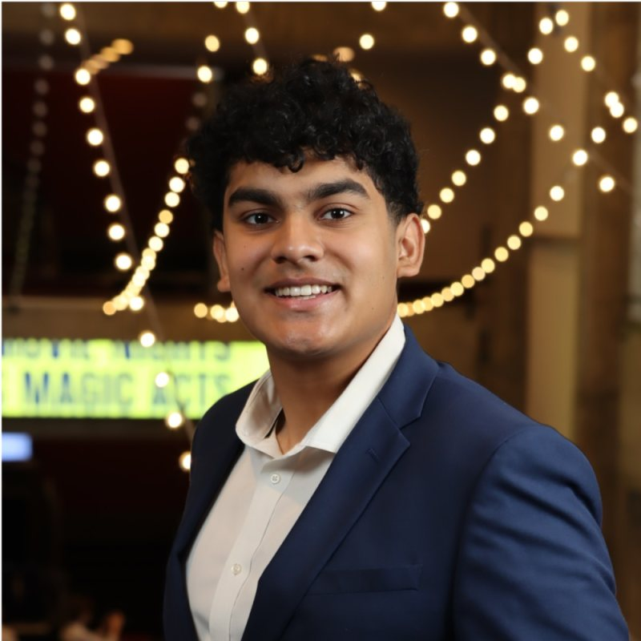

I’m a senior at Park Tudor School in Indianapolis, Indiana. I started coding at nine, following a YouTube HTML course to build a Facebook clone, and fell in love with programming. When my dad showed me ChatGPT in 2023, my focus shifted to building AI systems. More than the technology, though, my real passion is leading teams and sharing my ideas with the world, whether from a conference stage or around a small table. In my free time I’m a dedicated gymgoer (just hit 225 on bench press), a new runner training for a sub-1:55 half marathon, and a jazz musician (bass guitar on top!).

What I’m interested in.
In 1903, the New York Times argued that a working flying machine was a million years away. Sixty-nine days later, the Wright brothers flew; sixty-six years after that, we walked on the moon. Now that AI has made coding and knowledge almost free, I think humanity’s next step is to reapportion that freed-up ambition toward log-linear, outsized results. The startups that matter shouldn’t chase small things; they should take on the audacious ones, energy, physical intelligence, even interstellar travel, that today feel inconceivable.
This page as Markdown
# Keshav Krishnan
I build AI products. A senior at Park Tudor School in Indianapolis, Indiana.
I started coding at nine, following a YouTube HTML course to build a Facebook clone, and fell in love with programming. When my dad showed me ChatGPT in 2023, my focus shifted to building AI systems. More than the technology, though, my real passion is leading teams and sharing my ideas with the world, whether from a conference stage or around a small table. In my free time I'm a dedicated gymgoer (just hit 225 on bench press), a new runner training for a sub-1:55 half marathon, and a jazz musician (bass guitar on top!).
## What I'm interested in
In 1903, the New York Times argued that a working flying machine was a million years away. Sixty-nine days later, the Wright brothers flew; sixty-six years after that, we walked on the moon. Now that AI has made coding and knowledge almost free, I think humanity's next step is to reapportion that freed-up ambition toward log-linear, outsized results. The startups that matter shouldn't chase small things; they should take on the audacious ones, energy, physical intelligence, even interstellar travel, that today feel inconceivable.
## Ventures
### Kilra: Digital Health OS
Founder, CEO. I built and lead the product end to end, from the custom ML models to the AI-driven growth. People log symptoms, medications, sleep, and stress, and Kilra learns how their body reacts, surfacing the real triggers behind how they feel, so they can adjust their lifestyle quickly instead of waiting on expensive, drawn-out doctor visits.
- $10K annualized revenue
- iOS, live on the App Store: https://apps.apple.com/us/app/kilra-symptom-tracker/id6760767331
### CropConnect
Founder. Done-for-you local produce sourcing for restaurants. Independent kitchens keep three to five cents on every dollar and have already cut everything they can, so the only real lever left is charging more, and food from a named farm down the road is how they do it: the menu price moves, the food cost barely does, and that gap is almost pure profit. CropConnect runs the entire supply side, finding and vetting the farms and delivering every week, so the kitchen just cooks.
- Live: https://cropconnect.dev
## Selected research
### Safe Fast Charging Robust to Battery Aging
1st Author (IEEE IECON 2026). We built a solver-free safety filter for battery fast charging. Across 156 aged-cell tests at 56 microseconds per step it produced zero failures, where the standard approach failed every time. Accepted at IEEE IECON 2026 as first author.
### AI and crypto power use
1st Author, Project Coordinator, George Mason University, Costello College of Business (ASSIP). Modeled the power draw of AI data centers and crypto mining and showed that it raises grid carbon unless the load runs on surplus renewables, a result that held across eight demand models. Earlier in the program I stress-tested published bitcoin-mining emission claims against EIA generation data to see which ones held up. Research under Dr. Jiasun Li; presented at the George Mason student conference, with publication ongoing.
- Screening analysis: https://github.com/keshavkrishnan08/bitcoin-mining-emissions
## Projects
### FIREWATCH: computer vision based probabilistic wildfire tracking
Built a system that fuses camera, satellite, weather and terrain into a continuously self-correcting probabilistic spread forecast, then turns it into human-in-the-loop evacuation and resource decisions. Validated it by replaying five real fires against GOES ground truth.
- Tech: Python, PyTorch, YOLO detector, data assimilation, deck.gl
- Live site: https://keshavkrishnan08.github.io/firewatch/
- GitHub: https://github.com/keshavkrishnan08/firewatch
### CROSSING: computer vision based pedestrian-vehicle safety intelligence
Built a system that watches ordinary street video, models every person, vehicle, and interaction in the scene, and predicts who a vehicle is about to hit. A learned interaction model beats an engineered time-to-collision score at forecasting near-misses (0.95 AUROC), holds its calibration, and flags a pedestrian's intent to cross roughly 2.8 seconds before they step into the road.
- Tech: Python, YOLOv3, multi-object tracking, trajectory forecasting, FastAPI
- Live site: https://crossing-pi.vercel.app
- GitHub: https://github.com/keshavkrishnan08/ProjectCROSSING
### GridWatch: Indiana's data centers mapped against the power grid
Creator. Built an interactive atlas that plots every proposed and existing data center in Indiana against the grid: megawatts, water use, IURC dockets, and a projected household bill impact, with every figure linked to the public filing it came from. It tracks 76 projects across 32 counties whose active capacity already adds up to roughly 15,100 MW, about 43% of Indiana's peak demand, on a grid that is still 61% coal. A 2020 to 2035 timeline scrubs the build-out and a transparent calculator turns filed costs into a projected bill.
- Live: https://gridwatch-indiana.vercel.app
- GitHub: https://github.com/keshavkrishnan08/GridWatch
### Forecasting crop waste across the U.S. supply chain
Inventor (provisional patent, 26 claims). Built a graph neural network that forecasts supply-chain-driven crop waste across 2,130 US counties by routing inter-regional economic shocks through a cascade diffusion model.
- GitHub: https://github.com/keshavkrishnan08/CasCrop
## Selected CV
### EP Industrial Coatings
Operations & Engineering Intern (paid). Built a computer-vision quoting tool that cut quote turnaround from two weeks to five minutes at better than 90 percent accuracy, and wrote five company-wide SOPs over a five-month term.
### Park Tudor VEX Robotics: Team 6842V Vicious Vortex
Captain, Programmer, Strategy Design. Captained a six-person team to eight international placements and the most wins in the world across the 2024 and 2025 seasons, with more than 20 awards. Built our autonomy stack in C++: Monte Carlo localization, pure-pursuit path following over Bezier curves, and vision sensing. Also mentored the middle school team to a state title.
### VolunteerU
Cofounder. Cofounded a free platform that helps people launch and manage a nonprofit end to end, and helps volunteers find opportunities that actually fit them. The workspace keeps applications, roster, attendance, and verified hours in one place. https://volunteeruapp.com
### Mock Trial
Cofounder & President. Cofounded and lead Park Tudor's mock trial program, growing it from the ground up to 140 members. Ran the school's first bipartisan roundtable, bringing four state and national officials in front of a 50+ audience, took the team to districts, and earned an Outstanding Witness award.
## Familiar with
- Languages: Python, C++, Java, TypeScript, JavaScript, Swift, SQL
- Machine learning & research: PyTorch, NumPy, scikit-learn, pandas, SciPy, data assimilation, particle filters, YOLO, SAM2
- Agentic & applied AI: agentic AI systems, prompt engineering, LLM application development, retrieval-augmented generation, fine-tuning & evaluation, tool use & function calling
## Contact
- Email: keshav-krishnan@outlook.com
- GitHub: https://github.com/keshavkrishnan08
- LinkedIn: https://www.linkedin.com/in/keshav-krishnan-897394356/